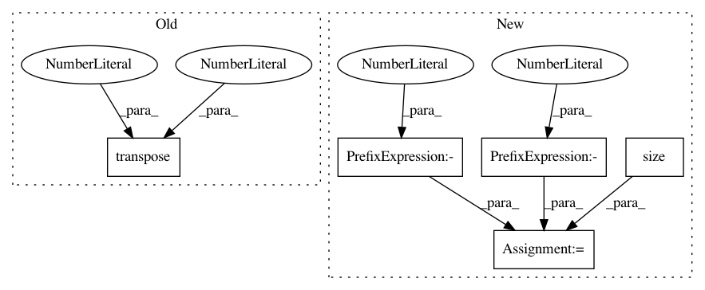

1b809b3c9570d617cb26949e40b921b36e826580,gpytorch/lazy/kronecker_product_lazy_variable.py,,_t_matmul,#Any#Any#,44
Before Change
if is_batch:
n_batch = res.size(0)
res = (
res.transpose(-2, -1)
.contiguous()
.view(n_batch, n_cols, lazy_var.size(-2), -1)
.transpose(0, 1)
.contiguous()
)
factor = lazy_var._t_matmul(res).permute(1, 3, 2, 0)
After Change
n_batch = res.size(0)
res = res.view(n_batch, lazy_var.size(-2), -1)
factor = lazy_var._t_matmul(res)
factor = factor.view(n_batch, lazy_var.size(-1), -1, n_cols).transpose(-3, -2).contiguous().view(-1, n_cols)
res = factor.contiguous().view(n_batch, -1, n_cols)
else:
res = res.view(lazy_var.size(-2), -1)
factor = lazy_var._t_matmul(res)
In pattern: SUPERPATTERN
Frequency: 3
Non-data size: 5
Instances
Project Name: cornellius-gp/gpytorch
Commit Name: 1b809b3c9570d617cb26949e40b921b36e826580
Time: 2018-08-31
Author: gpleiss@gmail.com
File Name: gpytorch/lazy/kronecker_product_lazy_variable.py
Class Name:
Method Name: _t_matmul
Project Name: allenai/allennlp
Commit Name: de0d3f7329c9c4f0204d87e76b6a956b0930ef3e
Time: 2018-07-20
Author: markn@allenai.org
File Name: allennlp/modules/matrix_attention/bilinear_matrix_attention.py
Class Name: BilinearMatrixAttention
Method Name: forward
Project Name: cornellius-gp/gpytorch
Commit Name: 1b809b3c9570d617cb26949e40b921b36e826580
Time: 2018-08-31
Author: gpleiss@gmail.com
File Name: gpytorch/lazy/kronecker_product_lazy_variable.py
Class Name:
Method Name: _matmul